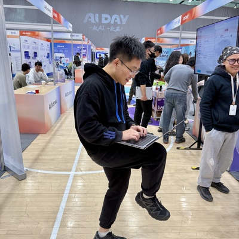

I am a Principal Researcher at Tencent TEG / Hunyuan Multimodal Model Department, focusing on Agentic RL, video multimodal understanding post-training, and AIGC. Previously, I worked at Alibaba / Alimama, NetEase Youdao, and SenseTime. My research interests span multimodal understanding, AIGC, multi-agent systems, and computational advertising.
I received my M.S. in Computer Software and Theory from the Institute of Computing Technology, Chinese Academy of Sciences (ICT, CAS), advised by Prof. Jianfeng Zhan, and my B.Eng. in Software Engineering from Nankai University.
M.S. in Computer Software and Theory
B.Eng. in Software Engineering